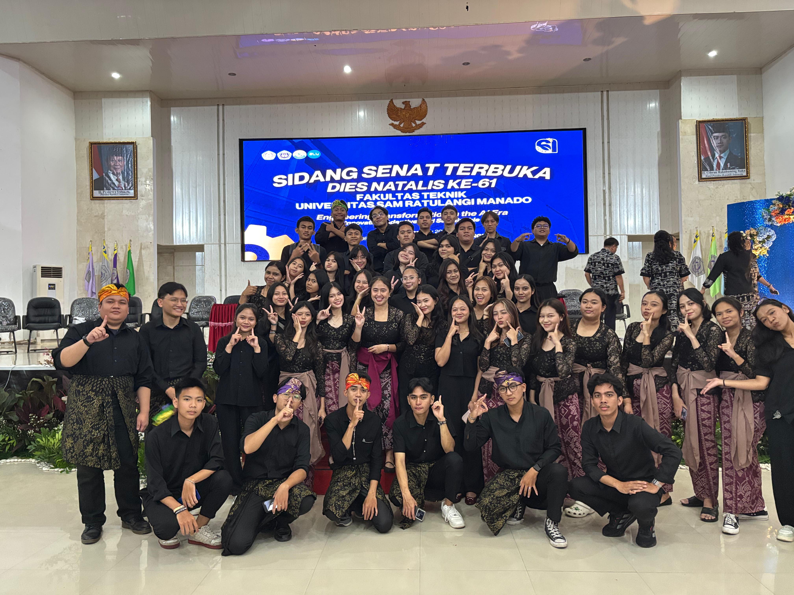
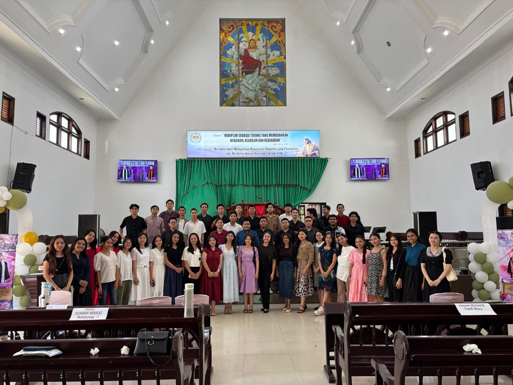

Systems of Memory: Beyond the Shutter


In my role managing digital assets for Blue Choir, I've learned that documentation is a form of data architecture. Whether capturing a live performance or archiving visual history in Google Drive, the goal is to ensure that every asset is organized, secure, and accessible for the future.
This architectural approach requires more than just storage; it requires a deep understanding of metadata and retrieval systems. For an Informatics student, a photograph is a data point. By implementing strict naming conventions and categorized directories, we transform a simple collection of images into a functional resource that serves the organization's long-term needs.
The security of these assets is paramount. By utilizing cloud-based synchronization and redundant backups, we protect the choir's history against hardware failure or data loss. In the end, we aren't just taking photos; we are building a digital legacy that remains high-fidelity and ready for the generations of students to come.